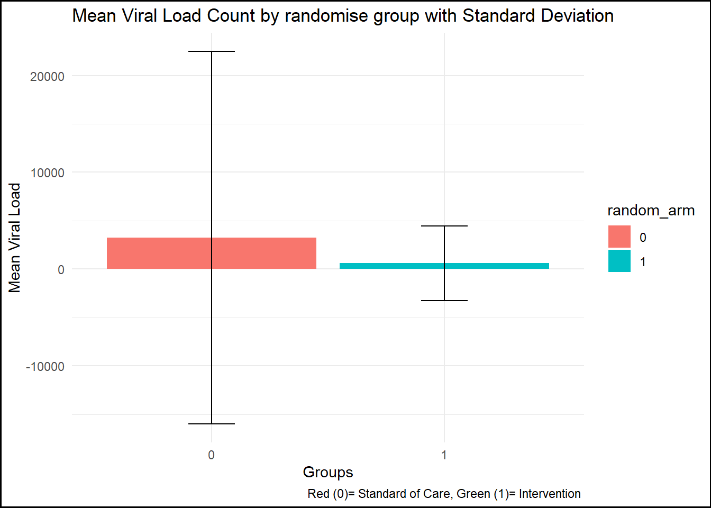
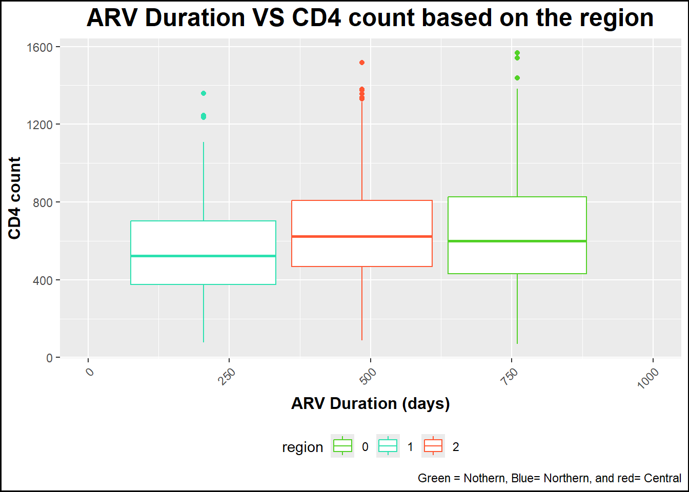
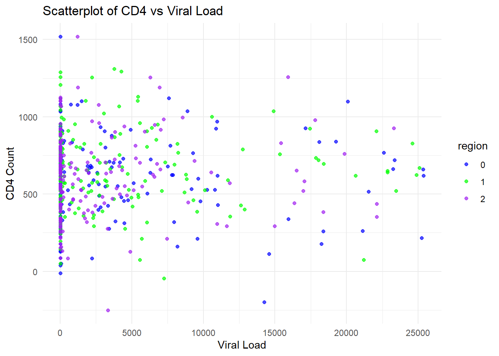

The Botswana Combination Prevention Project (BCPP) was a collaborative research effort led by the Botswana Ministry of Health (MOH), the Harvard School of Public Health/Botswana Harvard AIDS Institute Partnership (BHP), and the U.S. Centers for Disease Control and Prevention (CDC). This community-based randomized trial aimed to assess the impact of various HIV prevention strategies on reducing HIV incidence across 15 intervention and 15 control communities. The intervention communities received comprehensive HIV testing, linkage to care, and universal treatment services, guided by the UNAIDS 90-90-90 targets: ensuring 90% of individuals with HIV are aware of their status, 90% of those diagnosed are on antiretroviral therapy (ART), and 90% of those on ART achieve viral suppression.
The BCPP study was structured around two interrelated protocols: the Evaluation Protocol and the Intervention Protocol. The Evaluation Protocol assessed the primary outcome—HIV incidence—along with key secondary outcomes, focusing on data collected from the Baseline Household Survey, the HIV Incidence Cohort, and the End of Study Survey. Meanwhile, the Intervention Protocol involved the implementation of a combination prevention (CP) package in combination prevention communities (CPCs), monitoring the uptake of interventions such as expanded HIV testing and counseling, enhanced male circumcision services, and improved access to HIV care and treatment.
The dataset is available and free to download at CDC Website:https://data.cdc.gov/Global-Health/Botswana-Combination-Prevention-Project-BCPP-Publi/qcw5-4m9q/about_data.
The study is a cohort study with 3 phases. In this exercise, I only work on year 3 dataset. There are many information covered in this dataset, including demographic information of the respondent, soccioeconomic factors, HIV exposure, HIV status and conditions.
Install all packages needed
Install and library all packages needed in this section.
install.packages("tidyverse")
The following package(s) will be installed:
- tidyverse [2.0.0]
These packages will be installed into "C:/Users/mn27712/OneDrive - University of Georgia/DATA BACKUP/MACBOOK AND IPHONE_/Desktop/MADA2025/muhammadnasir-mada2025/renv/library/windows/R-4.4/x86_64-w64-mingw32".
# Installing packages --------------------------------------------------------
- Installing tidyverse ... OK [linked from cache]
Successfully installed 1 package in 18 milliseconds.
library(tidyverse)
── Attaching core tidyverse packages ──────────────────────── tidyverse 2.0.0 ──
✔ dplyr 1.1.4 ✔ readr 2.1.5
✔ forcats 1.0.0 ✔ stringr 1.5.1
✔ ggplot2 3.5.1 ✔ tibble 3.2.1
✔ lubridate 1.9.4 ✔ tidyr 1.3.1
✔ purrr 1.0.4
── Conflicts ────────────────────────────────────────── tidyverse_conflicts() ──
✖ dplyr::filter() masks stats::filter()
✖ dplyr::lag() masks stats::lag()
ℹ Use the conflicted package (<http://conflicted.r-lib.org/>) to force all conflicts to become errors
install.packages("ggplot2")
The following package(s) will be installed:
- ggplot2 [3.5.1]
These packages will be installed into "C:/Users/mn27712/OneDrive - University of Georgia/DATA BACKUP/MACBOOK AND IPHONE_/Desktop/MADA2025/muhammadnasir-mada2025/renv/library/windows/R-4.4/x86_64-w64-mingw32".
# Installing packages --------------------------------------------------------
- Installing ggplot2 ... OK [linked from cache]
Successfully installed 1 package in 17 milliseconds.
library(ggplot2)library(here)
here() starts at C:/Users/mn27712/OneDrive - University of Georgia/DATA BACKUP/MACBOOK AND IPHONE_/Desktop/MADA2025/muhammadnasir-mada2025
install.packages("patchwork") # This package is to redefine "/" operator for plot arrangement
The following package(s) will be installed:
- patchwork [1.3.0]
These packages will be installed into "C:/Users/mn27712/OneDrive - University of Georgia/DATA BACKUP/MACBOOK AND IPHONE_/Desktop/MADA2025/muhammadnasir-mada2025/renv/library/windows/R-4.4/x86_64-w64-mingw32".
# Installing packages --------------------------------------------------------
- Installing patchwork ... OK [linked from cache]
Successfully installed 1 package in 16 milliseconds.
library(patchwork)install.packages("writexl")
The following package(s) will be installed:
- writexl [1.5.1]
These packages will be installed into "C:/Users/mn27712/OneDrive - University of Georgia/DATA BACKUP/MACBOOK AND IPHONE_/Desktop/MADA2025/muhammadnasir-mada2025/renv/library/windows/R-4.4/x86_64-w64-mingw32".
# Installing packages --------------------------------------------------------
- Installing writexl ... OK [linked from cache]
Successfully installed 1 package in 16 milliseconds.
The following package(s) will be installed:
- janitor [2.2.1]
These packages will be installed into "C:/Users/mn27712/OneDrive - University of Georgia/DATA BACKUP/MACBOOK AND IPHONE_/Desktop/MADA2025/muhammadnasir-mada2025/renv/library/windows/R-4.4/x86_64-w64-mingw32".
# Installing packages --------------------------------------------------------
- Installing janitor ... OK [linked from cache]
Successfully installed 1 package in 19 milliseconds.
library(janitor)
Attaching package: 'janitor'
The following objects are masked from 'package:stats':
chisq.test, fisher.test
library(procs)
Loading required package: common
Loading the dataset
## set path dictionary bostwana <- here::here("cdcdata-exercise","data", "cdcbostwana.csv") # set the pathway to create relative path bostwana <-read_csv(bostwana) # read the dataset stored in specified path
Warning: One or more parsing issues, call `problems()` on your data frame for details,
e.g.:
dat <- vroom(...)
problems(dat)
Rows: 11369 Columns: 322
── Column specification ────────────────────────────────────────────────────────
Delimiter: ","
chr (217): de_subj_idC, de_hh_idC, de_plot_idC, region, random_arm, survey, ...
dbl (64): community_rndmN, pair_rndmN, interview_days, yeardone, age_at_int...
lgl (41): religion_name, religious_affil, relig_theogrp, ethnicity, prev_hi...
ℹ Use `spec()` to retrieve the full column specification for this data.
ℹ Specify the column types or set `show_col_types = FALSE` to quiet this message.
# A tibble: 6 × 13
region random_arm gender age_at_interview age5cat employment_status
<chr> <chr> <chr> <dbl> <chr> <chr>
1 Northern Intervention M 45.7 45-54 yea… Unemployed not l…
2 Southern Intervention F 51.8 45-54 yea… Unemployed looki…
3 Central Standard of Care F 40.9 35-44 yea… Unemployed looki…
4 Central Standard of Care F 18.7 16-24 yea… Unemployed not l…
5 Southern Intervention F 35.8 35-44 yea… Employed
6 Southern Standard of Care F 56.9 55-64 yea… Unemployed looki…
# ℹ 7 more variables: circumcised <chr>, hiv_status_current <chr>,
# hiv_status_time <chr>, viral_load_yr3 <dbl>, cd4_survey_yr3 <dbl>,
# cd4_surveydays_yr3 <dbl>, arv_duration_days <dbl>
summary(bost_df)
region random_arm gender age_at_interview
Length:11369 Length:11369 Length:11369 Min. :17.20
Class :character Class :character Class :character 1st Qu.:26.70
Mode :character Mode :character Mode :character Median :35.70
Mean :38.03
3rd Qu.:48.20
Max. :67.90
age5cat employment_status circumcised hiv_status_current
Length:11369 Length:11369 Length:11369 Length:11369
Class :character Class :character Class :character Class :character
Mode :character Mode :character Mode :character Mode :character
hiv_status_time viral_load_yr3 cd4_survey_yr3 cd4_surveydays_yr3
Length:11369 Min. : 40 Min. : 20.0 Min. : 358
Class :character 1st Qu.: 40 1st Qu.: 401.0 1st Qu.: 875
Mode :character Median : 40 Median : 573.0 Median : 895
Mean : 4305 Mean : 602.1 Mean : 881
3rd Qu.: 40 3rd Qu.: 757.0 3rd Qu.: 911
Max. :2243242 Max. :1567.0 Max. :1184
NA's :8130 NA's :10594 NA's :8032
arv_duration_days
Min. : 0
1st Qu.: 908
Median :2393
Mean :2432
3rd Qu.:3764
Max. :5879
NA's :8222
Note: To make easy for further analysis, I selected several variables:
region = region of sbject
random_arm = randomized arm
age= age
age5cat = age category
employment_status = employment status
hiv_status_current = Current HIV status
viral_load_yr3 = viral load in year 3 of the study
cd4_survey_yr3 = CD4 count in year 3
cd4_surveydays_yr3 = numbers of days enrolled to survey year 3.
arv_duration_days = number of day (duration) taking ARV
In this excercise, I would like to see the relationship between viral load, lenght of enrollment, ARV duration, and CD4 count. Therefore, I will drop all missing data in those variables.
data <- bost_df %>%drop_na(viral_load_yr3, cd4_survey_yr3, cd4_surveydays_yr3, arv_duration_days) %>%# I drop all observation wit N/A datafilter(viral_load_yr3 !=0, cd4_survey_yr3 !=0, cd4_surveydays_yr3 !=0, arv_duration_days !=0) # I found some observation contain 0 I drop those observation
sapply(data, class) # I want to check class of all variables
For N/A information in categorical data, I lable those missing value wih 999. However, the values are in characters. I want to change the values into factors to make us easy in analysis.
data <- data %>%mutate(region =recode(region, "Northern"=0,"Southern"=1, "Central"=2), random_arm =recode(random_arm, "Standard of Care"=0,"Intervention"=1), gender =recode(gender,"M"=0,"F"=1), age5cat =recode (age5cat, "16-24 years"=0, "25-34 years"=1, "35-44 years"=2, "45-54 years"=3, "55-64 years"=4), employment_status =recode(employment_status , "Employed"=0, "Unemployed looking for work"=1, "Unemployed not looking for work"=2), circumcised=recode(circumcised , "No"=0, "Yes"=1), hiv_status_current =recode(hiv_status_current, "HIV-uninfected"=0, "HIV-infected"=1, "Refused HIV testing"=2), hiv_status_time =recode(hiv_status_time, "HIV-negative"=0, "HIV-positive: previously diagnosed"=1, "Refused HIV testing"=2, "HIV-positive: newly discovered"=3)) # this part is to recode from character to numeric to allow us convert ito factors. sapply(data, class) # check character of the variables
Now, I want to convert categorical variables into factors
data <- data %>%mutate(across (c("region", "random_arm", "gender", "age5cat", "employment_status", "circumcised", "hiv_status_current", "hiv_status_time"), as.factor)) # this is to convert multiple variables into factors. as.factor() only can work in single variable. sapply(data, class) # check character of the variables
I want to replace all N/A with 999 in categorical variables.
data <- data %>%mutate(across(where(is.factor), ~replace_na(as.character(.), "999"))) %>%# replace the valuesmutate(across(where(is.character), as.factor)) # convert the variable back to factor. dim(data)
[1] 539 13
The data is clean now and ready for data exploration and analysis. There are 539 obserations and 13 variables in the final data.
Now I want to make summary statistics for Viral load and visualize it ina plot.
summary_by_arm <- data %>%group_by(random_arm) %>%summarise(mean_cd4 =mean(cd4_survey_yr3, na.rm =TRUE),sd_cd4 =sd(cd4_survey_yr3, na.rm =TRUE) ) # create by randomise_arm plot1 <-ggplot(summary_by_arm, aes(x = random_arm, y = mean_cd4, fill = random_arm)) +geom_bar(stat ="identity") +geom_errorbar(aes(ymin = mean_cd4 - sd_cd4, ymax = mean_cd4 + sd_cd4), width =0.2) +labs(title ="Mean CD4 Count by randomise group with Standard Deviation",x ="Groups", y ="Mean CD4 Count", caption ="Red (0)= Standard of Care, Green (1)= Intervention ") +theme_minimal() +theme(plot.background =element_rect(color ="black", size =1))
Warning: The `size` argument of `element_rect()` is deprecated as of ggplot2 3.4.0.
ℹ Please use the `linewidth` argument instead.
print(plot1)
figure_file =here("cdcdata-exercise", "pictures", "CD4 Mean and SD .png") # to set up location for the pictures created ggsave(filename = figure_file, plot=plot1) # save the pictures created
Saving 7 x 5 in image
Now I want to make summary statistics for viral load and visualize it in a plot.
summary_by_arm_vl <- data %>%group_by(random_arm) %>%summarise(mean_vl =mean(viral_load_yr3, na.rm =TRUE),sd_vl =sd(viral_load_yr3, na.rm =TRUE) ) # create by randomise_arm plot2 <-ggplot(summary_by_arm_vl, aes(x = random_arm, y = mean_vl, fill = random_arm)) +geom_bar(stat ="identity") +geom_errorbar(aes(ymin = mean_vl - sd_vl, ymax = mean_vl + sd_vl), width =0.2) +labs(title ="Mean Viral Load Count by randomise group with Standard Deviation",x ="Groups", y ="Mean Viral Load", caption ="Red (0)= Standard of Care, Green (1)= Intervention ") +theme_minimal() +theme(plot.background =element_rect(color ="black", size =1)) print(plot2)

figure_file =here("cdcdata-exercise", "pictures", "Viral Load Mean and SD .png") # to set up location for the pictures created ggsave(filename = figure_file, plot=plot2) # save the pictures created
Saving 7 x 5 in image
Data Exploration
In this part, I want to explore the data and vizualise it before data analysis.
plot3 <-ggplot(data, aes(x = viral_load_yr3, y = cd4_survey_yr3, color = region)) +geom_point(size =3) +# Specify geom as geom_point to make a scatterplotlabs(title ="Viral Load VS CD4 count based on the region", x ="Viral load", y ="CD4") +# Rename title and axestheme(axis.text.x =element_text(angle =45, hjust =1), # Rotate state names legend.position ="bottom", # Position legend at the bottomplot.title =element_text(size =18, face ="bold", hjust =0.5), axis.title.x =element_text(size =12, face ="bold"), axis.title.y =element_text(size =12, face ="bold")) +# Increase size and boldness of title and axesscale_color_manual(values =c("0"="#53d127", "1"="#2ce1b0", "2"="#ff5733"))+# crete color manually theme(plot.background =element_rect(color ="black", size =1))print(plot3)
figure_file =here("cdcdata-exercise", "pictures", "Viral Load VS CD4 based on region .png") # to set up location for the pictures created ggsave(filename = figure_file, plot=plot3) # save the pictures created
Saving 7 x 5 in image
plot4 <-ggplot(data, aes(x = arv_duration_days , y = cd4_survey_yr3, color = region)) +geom_boxplot() +# Specify geom as geom_point to make a scatterplotlabs(title ="ARV Duration VS CD4 count based on the region", x ="ARV Duration (days)", y ="CD4 count",caption ="Green = Nothern, Blue= Northern, and red= Central") +# Rename title and axestheme(axis.text.x =element_text(angle =45, hjust =1), # Rotate state names legend.position ="bottom", # Position legend at the bottomplot.title =element_text(size =18, face ="bold", hjust =0.5), axis.title.x =element_text(size =12, face ="bold"), axis.title.y =element_text(size =12, face ="bold")) +# Increase size and boldness of title and axestheme(plot.background =element_rect(color ="black", size =1)) +scale_x_continuous(limits =c(0, 1000)) +# Set x-axis maximum limit to 1000scale_color_manual(values =c("0"="#53d127", "1"="#2ce1b0", "2"="#ff5733")) # crete color manually print(plot4)
Warning: Removed 2 rows containing missing values or values outside the scale range
(`stat_boxplot()`).

figure_file =here("cdcdata-exercise", "pictures", "ARV Duration VS CD4 count based on the region .png") # to set up location for the pictures created ggsave(filename = figure_file, plot=plot4) # save the pictures created
Saving 7 x 5 in image
Warning: Removed 2 rows containing missing values or values outside the scale range
(`stat_boxplot()`).
This section contributed by Rayleen Lewis.
Performing a few more checks
Prior to creating the synthetic dataset, I wanted to check on a few more things with the data, like number of persons in each region and arm of the study. It also looks like most people are virally suppressed, so I wanted to look at the viral load among people who had values >200. I also want to get the median and IQR of CD4 count by region.
#Number of persons in each regiontable(data$region)
0 1 2
160 192 187
#Number of persons in each arm of the studytable(data$random_arm)
0 1
239 300
#Confirming that basically everyone is virally suppresseddata_supp <- data %>%filter(viral_load_yr3>200)ggplot(data_supp, aes(x = viral_load_yr3)) +geom_histogram()
`stat_bin()` using `bins = 30`. Pick better value with `binwidth`.
data_rl <- data %>%mutate(viral_2 =if_else(viral_load_yr3 <200, 0, 1))table(data_rl$viral_2)
0 1
510 29
#95% are virally suppressed (viral load <200)#Mean (SD) of CD4 count by armproc_means(data, var = cd4_survey_yr3, class = random_arm)
# A tibble: 3 × 9
CLASS TYPE FREQ VAR N MEAN STD MIN MAX
<fct> <dbl> <int> <chr> <int> <dbl> <dbl> <dbl> <dbl>
1 <NA> 0 539 cd4_survey_yr3 539 620. 279. 70 1567
2 0 1 239 cd4_survey_yr3 239 604. 265. 70 1540
3 1 1 300 cd4_survey_yr3 300 632. 290. 78 1567
proc_means(data, var = viral_load_yr3, class = random_arm)
# A tibble: 3 × 9
CLASS TYPE FREQ VAR N MEAN STD MIN MAX
<fct> <dbl> <int> <chr> <int> <dbl> <dbl> <dbl> <dbl>
1 <NA> 0 539 viral_load_yr3 539 1784. 13182. 40 177075
2 0 1 239 viral_load_yr3 239 3256. 19241. 40 177075
3 1 1 300 viral_load_yr3 300 610. 3854. 40 37415
Generating synthetic data
I aimed to reproduce a dataset similar to the dataset above. The following prompt was used in ChatGPT to generate the code in the next code chunk: using R, create a dataset with 539 observations and variables called region with 3 levels (values 0, 1, 2), arm with 2 levels (0, 1), cd4 (continuous), viral_load (continuous). 55% of observations should have an arm value of 1. 95% of the values for viral_load should be <200. Among observations with arm = 0, viral_load should have a mean of 3256 and standard deviation of 19241 and cd4 should have a mean of 604 and standard deviation of 265. Among observations with arm = 1, viral_load should have a mean of 610 and standard deviation of 3854 and cd4 should have a mean of 632 and standard deviation of 290. 160 observations should have a region value of 0, 192 should have a region value equal to 1 and the rest should have a region value equal to 2.
set.seed(123) # For reproducibility# Define the number of observationsn <-539# Define region valuesregion <-c(rep(0, 160), rep(1, 192), rep(2, n -160-192))# Define arm values ensuring 55% are 1arm <-sample(c(0, 1), n, replace =TRUE, prob =c(0.45, 0.55))# Generate cd4 values based on armcd4 <-ifelse(arm ==0,rnorm(sum(arm ==0), mean =604, sd =265),rnorm(sum(arm ==1), mean =632, sd =290))# Generate viral_load values based on armviral_load <-ifelse(arm ==0,rnorm(sum(arm ==0), mean =3256, sd =19241),rnorm(sum(arm ==1), mean =610, sd =3854))# Ensure 95% of viral_load values are <200threshold <-quantile(viral_load, 0.95)viral_load <-ifelse(viral_load >200, runif(length(viral_load), min =0, max =200), viral_load)# Create data framedataset <-data.frame(region =factor(region), arm =factor(arm), cd4 = cd4, viral_load = viral_load)# Check datasetsummary(dataset)
region arm cd4 viral_load
0:160 0:228 Min. :-251.6 Min. :-48569.28
1:192 1:311 1st Qu.: 446.1 1st Qu.: -3267.70
2:187 Median : 637.1 Median : 24.23
Mean : 625.9 Mean : -3507.56
3rd Qu.: 800.0 3rd Qu.: 125.58
Max. :1518.6 Max. : 198.68
I noticed that >25% of the viral load values were negative. I needed to update the code to set the minimum value to 40 (based on the original dataset). To update the code, I used the following follow-up prompt: can you update the code so that the min value for viral_load is 40?
set.seed(123) # For reproducibility# Define the number of observationsn <-539# Define region valuesregion <-c(rep(0, 160), rep(1, 192), rep(2, n -160-192))# Define arm values ensuring 55% are 1arm <-sample(c(0, 1), n, replace =TRUE, prob =c(0.45, 0.55))# Generate cd4 values based on armcd4 <-ifelse(arm ==0,rnorm(sum(arm ==0), mean =604, sd =265),rnorm(sum(arm ==1), mean =632, sd =290))# Generate viral_load values based on armviral_load <-ifelse(arm ==0,rnorm(sum(arm ==0), mean =3256, sd =19241),rnorm(sum(arm ==1), mean =610, sd =3854))# Ensure 95% of viral_load values are <200 while maintaining a minimum of 40threshold <-quantile(viral_load, 0.95)viral_load <-ifelse(viral_load >200, runif(length(viral_load), min =40, max =200), viral_load)viral_load <-pmax(viral_load, 40) # Ensure minimum value is 40# Create data framedataset <-data.frame(region =factor(region), arm =factor(arm), cd4 = cd4, viral_load = viral_load)# Check datasetsummary(dataset)
region arm cd4 viral_load
0:160 0:228 Min. :-251.6 Min. : 40.00
1:192 1:311 1st Qu.: 446.1 1st Qu.: 40.00
2:187 Median : 637.1 Median : 59.39
Mean : 625.9 Mean : 87.73
3rd Qu.: 800.0 3rd Qu.:140.22
Max. :1518.6 Max. :198.95
Recreating tables and plots from above
To check the synthetic dataset, I will recreate some of the results from above.
# Mean and SD of viral load and CD4 count by arm#Synthetic datasetproc_means(dataset, var = cd4, class = arm)
CLASS TYPE FREQ VAR N MEAN STD MIN MAX
1 <NA> 0 539 cd4 539 625.8906 261.6480 -251.6203 1518.566
2 0 1 228 cd4 228 599.0607 250.5687 -201.0123 1255.786
3 1 1 311 cd4 311 645.5601 268.1762 -251.6203 1518.566
#Original datasetproc_means(data, var = cd4_survey_yr3, class = random_arm)
# A tibble: 3 × 9
CLASS TYPE FREQ VAR N MEAN STD MIN MAX
<fct> <dbl> <int> <chr> <int> <dbl> <dbl> <dbl> <dbl>
1 <NA> 0 539 cd4_survey_yr3 539 620. 279. 70 1567
2 0 1 239 cd4_survey_yr3 239 604. 265. 70 1540
3 1 1 300 cd4_survey_yr3 300 632. 290. 78 1567
#Synthetic datasetproc_means(dataset, var = viral_load, class = arm)
CLASS TYPE FREQ VAR N MEAN STD MIN MAX
1 <NA> 0 539 viral_load 539 87.72695 54.60308 40 198.9452
2 0 1 228 viral_load 228 90.65165 55.76379 40 198.9452
3 1 1 311 viral_load 311 85.58280 53.72527 40 198.2108
#Original datasetproc_means(data, var = viral_load_yr3, class = random_arm)
# A tibble: 3 × 9
CLASS TYPE FREQ VAR N MEAN STD MIN MAX
<fct> <dbl> <int> <chr> <int> <dbl> <dbl> <dbl> <dbl>
1 <NA> 0 539 viral_load_yr3 539 1784. 13182. 40 177075
2 0 1 239 viral_load_yr3 239 3256. 19241. 40 177075
3 1 1 300 viral_load_yr3 300 610. 3854. 40 37415
The means and standard deviations for each arm are very comparable between the original and synthetic datasets. The means are within 15 of each other. The number in each arm is also similar.
I also used ChatGPT to create plots similar to the plots above to see how well ChatGPT could continue to use the dataset. I supplied this prompt to create the code for the plots: write code to create three plots. first, plot the mean cd4 by arm with error bars showing 1 standard deviation, color arm = 0 as red and arm = 1 as teal. For the second plot, perform the same as the first plot using viral_load instead of cd4. For the third plot, create a scatterplot with cd4 as the y and viral_load as the x, coloring the dots by region.
As a note, based on my prompt, R assigned one of the colors in Plots 1 and 2 as teal, which isn’t a color R recognized. I changed teal to blue in the code below.
# Compute summary statistics for CD4 by armcd4_summary <- dataset %>%group_by(arm) %>%summarise(mean_cd4 =mean(cd4),sd_cd4 =sd(cd4)) # First plot: Mean CD4 by arm with error barsp1 <-ggplot(cd4_summary, aes(x = arm, y = mean_cd4, fill = arm)) +geom_bar(stat ="identity", position =position_dodge(), color ="black") +geom_errorbar(aes(ymin = mean_cd4 - sd_cd4, ymax = mean_cd4 + sd_cd4), width =0.2) +scale_fill_manual(values =c("0"="red", "1"="blue")) +labs(title ="Mean CD4 by Arm", x ="Arm", y ="Mean CD4 Count") +theme_minimal()# Compute summary statistics for Viral Load by armviral_summary <- dataset %>%group_by(arm) %>%summarise(mean_viral =mean(viral_load),sd_viral =sd(viral_load)) # Second plot: Mean Viral Load by arm with error barsp2 <-ggplot(viral_summary, aes(x = arm, y = mean_viral, fill = arm)) +geom_bar(stat ="identity", position =position_dodge(), color ="black") +geom_errorbar(aes(ymin = mean_viral - sd_viral, ymax = mean_viral + sd_viral), width =0.2) +scale_fill_manual(values =c("0"="red", "1"="blue")) +labs(title ="Mean Viral Load by Arm", x ="Arm", y ="Mean Viral Load") +theme_minimal()# Third plot: Scatterplot of CD4 vs. Viral Load, colored by Regionp3 <-ggplot(dataset, aes(x = viral_load, y = cd4, color = region)) +geom_point(alpha =0.7) +scale_color_manual(values =c("0"="blue", "1"="green", "2"="purple")) +labs(title ="Scatterplot of CD4 vs Viral Load", x ="Viral Load", y ="CD4 Count") +theme_minimal()# Display plotsprint(p1)
print(p2)
print(p3)
The synthetic viral load variable has a max of 200, even though 5% of values were supposed to be above 200 leading to a mean value of 3300 for arm = 0 and 610 for arm = 1. To get around this, I told ChatGPT what the problem was and suggested a solution: For the dataset creation, the mean viral_load is too low. Can the order of the steps for confirming 95% of value are below 200 and sampling from the distribution be switched?
set.seed(123) # For reproducibility# Define the number of observationsn <-539# Define region valuesregion <-c(rep(0, 160), rep(1, 192), rep(2, n -160-192))# Define arm values ensuring 55% are 1arm <-sample(c(0, 1), n, replace =TRUE, prob =c(0.45, 0.55))# Generate cd4 values based on armcd4 <-ifelse(arm ==0,rnorm(sum(arm ==0), mean =604, sd =265),rnorm(sum(arm ==1), mean =632, sd =290))# Generate viral_load values based on armviral_load <-numeric(n) # Initialize vectorviral_load[arm ==0] <-rnorm(sum(arm ==0), mean =3256, sd =19241)viral_load[arm ==1] <-rnorm(sum(arm ==1), mean =610, sd =3854)# Ensure 95% of viral_load values are <200 while keeping original distributionhigh_values <-which(viral_load >=quantile(viral_load, 0.95))viral_load[high_values] <-runif(length(high_values), min =40, max =200) # Keep min at 40# Create data framedataset <-data.frame(region =factor(region), arm =factor(arm), cd4 = cd4, viral_load = viral_load)# Check datasetsummary(dataset)
region arm cd4 viral_load
0:160 0:228 Min. :-251.6 Min. :-48569.3
1:192 1:311 1st Qu.: 446.1 1st Qu.: -3309.8
2:187 Median : 637.1 Median : 268.9
Mean : 625.9 Mean : 101.8
3rd Qu.: 800.0 3rd Qu.: 4466.5
Max. :1518.6 Max. : 25375.5
# Compute summary statistics for CD4 by armcd4_summary <- dataset %>%group_by(arm) %>%summarise(mean_cd4 =mean(cd4),sd_cd4 =sd(cd4)) # First plot: Mean CD4 by arm with error barsp1 <-ggplot(cd4_summary, aes(x = arm, y = mean_cd4, fill = arm)) +geom_bar(stat ="identity", position =position_dodge(), color ="black") +geom_errorbar(aes(ymin = mean_cd4 - sd_cd4, ymax = mean_cd4 + sd_cd4), width =0.2) +scale_fill_manual(values =c("0"="red", "1"="blue")) +labs(title ="Mean CD4 by Arm", x ="Arm", y ="Mean CD4 Count") +theme_minimal()# Compute summary statistics for Viral Load by armviral_summary <- dataset %>%group_by(arm) %>%summarise(mean_viral =mean(viral_load),sd_viral =sd(viral_load)) # Second plot: Mean Viral Load by arm with error barsp2 <-ggplot(viral_summary, aes(x = arm, y = mean_viral, fill = arm)) +geom_bar(stat ="identity", position =position_dodge(), color ="black") +geom_errorbar(aes(ymin = mean_viral - sd_viral, ymax = mean_viral + sd_viral), width =0.2) +scale_fill_manual(values =c("0"="red", "1"="blue")) +labs(title ="Mean Viral Load by Arm", x ="Arm", y ="Mean Viral Load") +theme_minimal()# Third plot: Scatterplot of CD4 vs. Viral Load, colored by Regionp3 <-ggplot(dataset, aes(x = viral_load, y = cd4, color = region)) +geom_point(alpha =0.7) +scale_color_manual(values =c("0"="blue", "1"="green", "2"="purple")) +labs(title ="Scatterplot of CD4 vs Viral Load", x ="Viral Load", y ="CD4 Count") +theme_minimal()# Display plotsprint(p1)
print(p2)
print(p3)
This resulted in viral_load values that were negative again, so I added a final prompt: Can you update so the lowest value for viral_load is 40?
The following code was created:
set.seed(123) # For reproducibility# Define the number of observationsn <-539# Define region valuesregion <-c(rep(0, 160), rep(1, 192), rep(2, n -160-192))# Define arm values ensuring 55% are 1arm <-sample(c(0, 1), n, replace =TRUE, prob =c(0.45, 0.55))# Generate cd4 values based on armcd4 <-ifelse(arm ==0,rnorm(sum(arm ==0), mean =604, sd =265),rnorm(sum(arm ==1), mean =632, sd =290))# Generate viral_load values based on armviral_load <-numeric(n) # Initialize vectorviral_load[arm ==0] <-rnorm(sum(arm ==0), mean =3256, sd =19241)viral_load[arm ==1] <-rnorm(sum(arm ==1), mean =610, sd =3854)# Ensure 95% of viral_load values are <200 while keeping original distributionhigh_values <-which(viral_load >=quantile(viral_load, 0.95))viral_load[high_values] <-runif(length(high_values), min =40, max =200) # Keep min at 40# Ensure minimum viral_load is 40viral_load <-pmax(viral_load, 40)# Create data framedataset <-data.frame(region =factor(region), arm =factor(arm), cd4 = cd4, viral_load = viral_load)# Check datasetsummary(dataset)
region arm cd4 viral_load
0:160 0:228 Min. :-251.6 Min. : 40.0
1:192 1:311 1st Qu.: 446.1 1st Qu.: 40.0
2:187 Median : 637.1 Median : 268.9
Mean : 625.9 Mean : 3525.9
3rd Qu.: 800.0 3rd Qu.: 4466.5
Max. :1518.6 Max. :25375.5
# Compute summary statistics for CD4 by armcd4_summary <- dataset %>%group_by(arm) %>%summarise(mean_cd4 =mean(cd4),sd_cd4 =sd(cd4)) # First plot: Mean CD4 by arm with error barsp1 <-ggplot(cd4_summary, aes(x = arm, y = mean_cd4, fill = arm)) +geom_bar(stat ="identity", position =position_dodge(), color ="black") +geom_errorbar(aes(ymin = mean_cd4 - sd_cd4, ymax = mean_cd4 + sd_cd4), width =0.2) +scale_fill_manual(values =c("0"="red", "1"="blue")) +labs(title ="Mean CD4 by Arm", x ="Arm", y ="Mean CD4 Count") +theme_minimal()# Compute summary statistics for Viral Load by armviral_summary <- dataset %>%group_by(arm) %>%summarise(mean_viral =mean(viral_load),sd_viral =sd(viral_load)) # Second plot: Mean Viral Load by arm with error barsp2 <-ggplot(viral_summary, aes(x = arm, y = mean_viral, fill = arm)) +geom_bar(stat ="identity", position =position_dodge(), color ="black") +geom_errorbar(aes(ymin = mean_viral - sd_viral, ymax = mean_viral + sd_viral), width =0.2) +scale_fill_manual(values =c("0"="red", "1"="blue")) +labs(title ="Mean Viral Load by Arm", x ="Arm", y ="Mean Viral Load") +theme_minimal()# Third plot: Scatterplot of CD4 vs. Viral Load, colored by Regionp3 <-ggplot(dataset, aes(x = viral_load, y = cd4, color = region)) +geom_point(alpha =0.7) +scale_color_manual(values =c("0"="blue", "1"="green", "2"="purple")) +labs(title ="Scatterplot of CD4 vs Viral Load", x ="Viral Load", y ="CD4 Count") +theme_minimal()# Display plotsprint(p1)
print(p2)
print(p3)

The bar chart for CD4 by arm is very similar to the original data. Based on the bar chart for viral load, the means appear simialr but the standard errors are reduced compared to the original data. The final plot, the scatterplot of CD4 count by viral load, showed that many more observations had higher viral loads and many more had viral loads above 200. It seems like ChatGPT isn’t handling the prompts for this variable well. Overall, the synthetic data look good but not perfect.